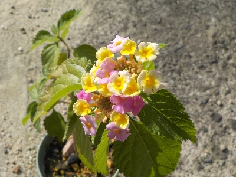
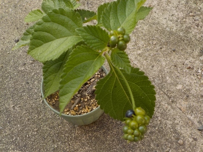
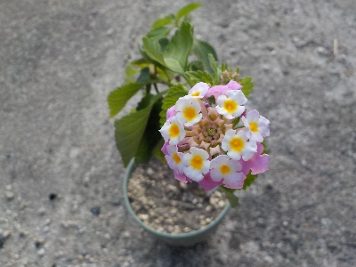
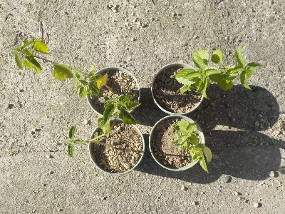
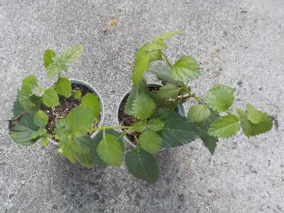

遊びで植物を育てよう
2024/11/04
ランタナの開花期間は長いですね。

また花が咲きました。
開花期間が長いのはいいですね。そのぶん繁殖力が強いので植えてはいけないなんてネットにありますが、そんなに気にする必要はないんじゃないかな。
嫌なら抜けばいいし。
【ランタナTOP】
【木TOP】
【園芸TOP】
2024/09/27
ランタナに実が出来ました。

花が咲いた後に実が出来ました。
タネはいらないので、取り除きました。
【ランタナTOP】
【木TOP】
【園芸TOP】
2024/09/07
今年挿し木で増やしたランタナが開花しました。

まだ木は小さいですが、もう花が咲きました。
1本1鉢にしましたが、まだ水が足りないみたいでしおれています。鉢のサイズアップが必要です。
【ランタナTOP】
【木TOP】
【園芸TOP】
2024/08/16
ランタナを1本1鉢にしました。

1鉢に2本植えていたランタナですが、水の消費量が多くすぐにしおれるので1本1鉢にしました。
これでダメだったら鉢のサイズを大きくします。
【ランタナTOP】
【木TOP】
【園芸TOP】
2024/07/06
ランタナを植え替えしました。

ポットの下から根っこが沢山出ていたので、鉢に植え替えしました。
１鉢に１本づつ植えた方がいいですが、鉢を沢山使うのがもったいなうので２本づつ植えました。
【ランタナTOP】
【木TOP】
【園芸TOP】
2024/06/04
ランタナの挿し木をしました。

知らない会社の花壇でランタナ茂って咲いていました。派手な花なので目立つ場所にあるといいですね。
我が家のランタナは畑にあるので目立っていないです。挿し木して増やして、鉢植えを玄関に置こうかと思いました。
強い植物なので、年内に開花してくれないかな。
【ランタナTOP】
【木TOP】
【園芸TOP】
畑仕事じゃないよ。
【おいしいものを食べよう。】【しっかり寝よう。】
【ソロ活をしよう!】【季節感のあることをしよう。】【動画視聴はほどほどに。】【当サイトの全てのコンテンツは無断転載禁止です。】